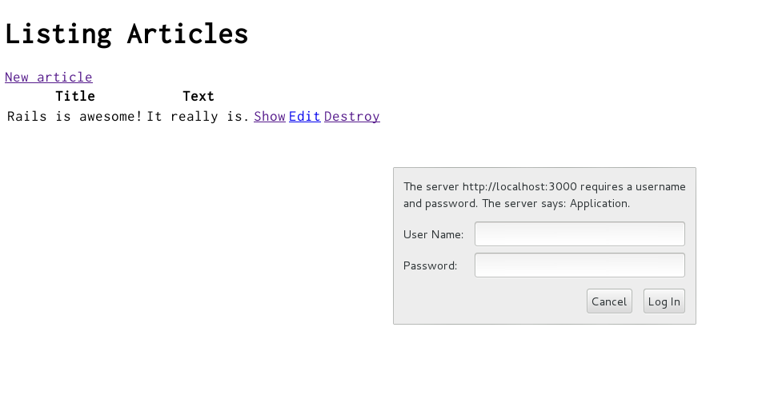

1 Supuestos del Guía
Este guía está diseñada para principiantes que desean comenzar con Rails aplicación desde cero. No asume que tenga ninguna experiencia previa con rieles.
Rails es un marco de aplicación web que se ejecuta en el lenguaje de programación Ruby. Si no tiene experiencia previa con Ruby, encontrará un aprendizaje muy empinado curva de zambullirse directamente en Rails Hay varias listas seleccionadas de recursos en línea. para aprender Ruby:
Tenga en cuenta que algunos recursos, aunque siguen siendo excelentes, cubren versiones de Ruby tan antiguas como 1.6, y comúnmente 1.8, y no incluirá alguna sintaxis que verá en el día a día desarrollo con Rails.
2 ¿Qué es Rails?
Rails es un marco de desarrollo de aplicaciones web escrito en el lenguaje de programación Ruby. Está diseñado para facilitar la programación de aplicaciones web haciendo suposiciones sobre lo que todo desarrollador necesita para empezar. Te permite escribir menos código mientras logra más que muchos otros lenguajes y marcos. Los desarrolladores experimentados de Rails también informan que hace aplicaciones web desarrollo más divertido.
Rails es un software obstinado. Supone que existe un "mejor" forma de hacer las cosas, y está diseñado para fomentar esa forma y, en algunos casos, para desalentar las alternativas. Si aprende "The Rails Way", probablemente descubrirá un tremendo aumento de la productividad. Si persiste en traer viejos hábitos de otros lenguajes para el desarrollo de Rails y tratando de utilizar patrones que aprendido en otro lugar, es posible que tenga una experiencia menos feliz.
La filosofía de Rails incluye dos principios rectores principales:
- No se repita: DRY es un principio de desarrollo de software que establece que "Todo conocimiento debe tener una única, inequívoca y autorizada representación dentro de un sistema ". Al no escribir la misma información una y otra vez de nuevo, nuestro código es más fácil de mantener, más extensible y con menos errores.
- Convención sobre configuración: Rails tiene opiniones sobre la mejor manera de hacer muchos cosas en una aplicación web, y por defecto a este conjunto de convenciones, en lugar de requieren que especifique minucias a través de archivos de configuración sin fin.
3 Creating a New Rails Project
La mejor forma de leer esta guía es seguirla paso a paso. Todos los pasos son esencial para ejecutar esta aplicación de ejemplo y no se requiere ningún código o pasos adicionales necesario.
Si sigue esta guía, creará un proyecto de Rails llamado
blog, un weblog (muy) simple. Antes de que pueda comenzar a compilar la aplicación,
debe asegurarse de tener Rails instalado.
SUGERENCIA: Los ejemplos siguientes usan $ para representar el indicador de su terminal en un sistema operativo tipo UNIX,
aunque es posible que se haya personalizado para que tenga un aspecto diferente. Si usa Windows,
su mensaje se verá algo así como c:\source_code>
3.1 Installing Rails
Antes de instalar Rails, debe verificar para asegurarse de que su sistema tenga la prerrequisitos adecuados instalados. Éstos incluyen:
- Ruby
- SQLite3
- Node.js
- Yarn
3.1.1 Installing Ruby
Abre una línea de comandos. En macOS, abra Terminal.app, en Windows elija
"Ejecutar" en el menú Inicio y escriba 'cmd.exe'. Cualquier comando precedido por un
el signo de dólar $ debe ejecutarse en la línea de comandos. Verifica que tienes un
versión actual de Ruby instalada:
$ ruby -v
ruby 2.5.0
Rails requiere Ruby versión 2.5.0 o posterior. Si el número de versión devuelto es menos que ese número (como 2.3.7 o 1.8.7), necesitará instalar una copia nueva de Ruby.
Para instalar Rails en Windows, primero deberá instalar Ruby Installer.
For more installation methods for most Operating Systems take a look a ruby-lang.org.
3.1.2 Installing SQLite3
También necesitará una instalación de la base de datos SQLite3. Muchos sistemas operativos populares similares a UNIX se envían con una versión aceptable de SQLite3. Otros pueden encontrar instrucciones de instalación en el SQLite3 website.
Verifique que esté correctamente instalado y en su carga PATH:
$ sqlite3 --version
El programa debe informar su versión.
3.1.3 Installing Node.js and Y
Finalmente, necesitará Node.js y Yarn instalados para administrar el JavaScript de su aplicación.
Encuentre las instrucciones de instalación en el Node.js website y verifique que esté instalado correctamente con el siguiente comando:
$ node --version
Se debe imprimir la versión de su tiempo de ejecución de Node.js. Asegúrate de que sea mayor que 8.16.0.
Para instalar Yarn, siga la instalación instrucciones en Yarn website.
La ejecución de este comando debería imprimir la versión de Yarn:
$ yarn -v
Si dice algo como "1.22.0", Yarn se ha instalado correctamente.
3.1.4 Installing Rails
Para instalar Rails, use el comando gem install proporcionado por RubyGems:
$ gem install rails
Para verificar que tiene todo instalado correctamente, debería poder ejecutar lo siguiente:
Si dice algo como "Rails 6.0.0", está listo para continuar.
3.2 Creating the Blog Application
Rails viene con una serie de scripts llamados generadores que están diseñados para hacer su vida de desarrollo más fácil creando todo lo necesario para comenzar trabajando en una tarea en particular. Uno de ellos es el nuevo generador de aplicaciones, que le proporcionará la base de una nueva aplicación Rails para que no tiene que escribirlo usted mismo.
Para usar este generador, abra una terminal, navegue a un directorio donde tenga derechos para crear archivos y escriba:
$ rails new blog
Esto creará una aplicación Rails llamada Blog en un directorio blog y
instale las dependencias de gemas que ya se mencionan en Gemfile usando
bundle install.
Si está utilizando el Subsistema de Windows para Linux, actualmente hay algunos
limitaciones en las notificaciones del sistema de archivos que significan que debe deshabilitar el spring
y listen gems que puede hacer ejecutando rails new blog --skip-spring --skip-listen.
Puede ver todas las opciones de línea de comandos que la aplicación Rails
el constructor acepta ejecutando rails new -h.
Después de crear la aplicación de blog, cambie a su carpeta:
$ cd blog
El directorio blog tiene varios archivos y carpetas autogenerados que hacen
hasta la estructura de una aplicación Rails. La mayor parte del trabajo de este tutorial
suceden en la carpeta app, pero aquí hay un resumen básico de la función de cada
de los archivos y carpetas que Rails creó de forma predeterminada:
| File/Folder | Purpose |
|---|---|
| app / | Contiene los controladores, modelos, vistas, ayudantes, mailers, canales, trabajos y activos para su aplicación. Se centrará en esta carpeta durante el resto de esta guía. |
| bin / | Contiene el script rails que inicia su aplicación y puede contener otros scripts que usa para configurar, actualizar, implementar o ejecutar su aplicación. |
| config / | Configure las rutas, la base de datos y más de su aplicación. Esto se trata con más detalle en Configuración de aplicaciones de Rails. |
| config.ru | Configuración de Rack para servidores basados en Rack utilizados para iniciar la aplicación. Para obtener más información sobre Rack, consulte el sitio web de Rack. |
| db / | Contiene el esquema de la base de datos actual, así como las migraciones de la base de datos. |
| Gemfile Gemfile.lock |
Estos archivos le permiten especificar qué dependencias de gemas son necesarias para su aplicación Rails. Estos archivos son utilizados por la gema Bundler. Para obtener más información sobre Bundler, consulte el sitio web de Bundler. |
| lib / | Módulos extendidos para su aplicación. |
| log / | Archivos de registro de la aplicación. |
| package.json | Este archivo le permite especificar qué dependencias npm son necesarias para su aplicación Rails. Este archivo es utilizado por Yarn. Para obtener más información sobre Yarn, consulte el sitio web de Yarn. |
| public / | La única carpeta vista por el mundo tal cual. Contiene archivos estáticos y activos compilados. |
| Rakefile | Este archivo localiza y carga tareas que se pueden ejecutar desde la línea de comandos. Las definiciones de tareas se definen en todos los componentes de Rails. En lugar de cambiar Rakefile, debe agregar sus propias tareas agregando archivos al directoriolib/tasks de su aplicación. |
| README.md | Este es un breve manual de instrucciones para su aplicación. Debe editar este archivo para informar a los demás qué hace su aplicación, cómo configurarla, etc. |
| storage / | Archivos de almacenamiento activo para el servicio de disco. Esto se trata en Descripción general de Active Storage. |
| test / | Pruebas unitarias, accesorios y otros aparatos de prueba. Estos se tratan en Prueba de aplicaciones de rieles. |
| tmp / | Archivos temporales (como caché y archivos pid). |
| vendor / | Un lugar para todo el código de terceros. En una aplicación típica de Rails, esto incluye gemas vendidas. |
| .gitignore | Este archivo le dice a git qué archivos (o patrones) debe ignorar. Consulta GitHub: ignorar archivos para obtener más información sobre cómo ignorar archivos. |
| .ruby-version | Este archivo contiene la versión predeterminada de Ruby. |
4 Hello, Rails!
Para empezar, veamos algo de texto en la pantalla rápidamente. Para hacer esto, necesitas ponga en funcionamiento su servidor de aplicaciones Rails.
4.1 Starting up the Web Server
De hecho, ya tienes una aplicación Rails funcional. Para verlo, necesitas
Inicie un servidor web en su máquina de desarrollo. Puede hacer esto ejecutando el
siguiendo en el directorio blog:
$ bin/rails server
Si está utilizando Windows, debe pasar los scripts en el bin
carpeta directamente al intérprete de Ruby, p. ej. ruby bin\rails server.
la compresión de activos de JavaScript requiere
tener un tiempo de ejecución de JavaScript disponible en su sistema, en ausencia
de un tiempo de ejecución, verá un error execjs durante la compresión de activos.
Por lo general, macOS y Windows vienen con un tiempo de ejecución de JavaScript instalado.
therubyrhino es el tiempo de ejecución recomendado para los usuarios de JRuby y es agregado por
predeterminado al Gemfile en aplicaciones generadas bajo JRuby. Puedes investigar
todos los tiempos de ejecución admitidos en ExecJS.
Esto iniciará Puma, un servidor web distribuido con Rails por defecto. Para ver su aplicación en acción, abra una ventana del navegador y navegue hasta http://localhost:3000. Debería ver la página de información predeterminada de Rails:

Para detener el servidor web, presione Ctrl + C en la ventana de terminal donde está
corriendo. Para verificar que el servidor se haya detenido, debería ver su símbolo del sistema
cursor de nuevo. Para la mayoría de los sistemas similares a UNIX, incluido macOS, será un
signo de dólar $. En el modo de desarrollo, Rails generalmente no requiere que
reiniciar el servidor; los cambios que realice en los archivos serán recogidos automáticamente por
el servidor.
El "¡Yay! ¡Estás sobre rieles!" página es la prueba de humo para un nuevo Rails aplicación: se asegura de que tenga su software configurado correctamente suficiente para servir una página.
4.2 Say "Hello", Rails
Para que Rails diga "Hola", necesitas crear como mínimo una route, un controller y una view.
El propósito de un controlador es recibir solicitudes específicas para la aplicación. Routing decide qué controlador recibe qué solicitudes. A menudo, hay más de una ruta a cada controlador, y diferentes rutas pueden ser atendidas por diferentes acciones. El propósito de cada acción es recopilar información para proporcionar a una vista.
El propósito de una vista es mostrar esta información en un formato legible por humanos. Un Una distinción importante a hacer es que el controlador, no la vista, es donde se recopila la información. La vista debería mostrar esa información. De forma predeterminada, las plantillas de vista están escritas en un lenguaje llamado eRuby (Embedded Ruby) que es procesada por el ciclo de solicitud en Rails antes de ser enviada al usuario.
Cuando hacemos una solicitud a nuestra aplicación Rails, lo hacemos mediante una solicitud
a una ruta particular. Para empezar, creemos una ruta en
config/routes.rb:
Rails.application.routes.draw do
get "/articles", to: "articles#index"
# For details on the DSL available within this file, see https://guides.rubyonrails.org/routing.html
end
Este es el archivo de enrutamiento de su aplicación que contiene entradas en un DSL (específico del dominio language) que dice Explica cómo conectar solicitudes entrantes a controladores y acciones.
La línea que acabamos de agregar dice que vamos a hacer coincidir un GET
/articles solicitud de articles#index . Esta cadena pasó como la opción to
representa el controlador y acción que se encargará de manejar
Esta petición.
Los controladores son clases que agrupan métodos comunes para manejar un recurso particular. Los métodos dentro de los controladores reciben el nombre "acciones", ya que actúan sobre las solicitudes a medida que llegan.
Para crear un nuevo controlador, deberá ejecutar el generador "controlador" y dígale que quiere un controlador llamado "artículos" con una acción llamada "índice", así como esto:
$ bin/rails generate controller articles index
Rails creará varios archivos y una ruta para ti.
create app/controllers/articles_controller.rb
route get 'articles/index'
invoke erb
create app/views/articles
create app/views/articles/index.html.erb
invoke test_unit
create test/controllers/articles_controller_test.rb
invoke helper
create app/helpers/articles_helper.rb
invoke test_unit
invoke assets
invoke scss
create app/assets/stylesheets/articles.scss
El más importante de ellos es el controlador, ubicado enapp/controllers/articles_controller.rb.
Veamos ese controlador ahora:
class ArticlesController < ApplicationController
def index
end
end
Este controlador define una sola acción o "método" en términos comunes de Ruby,
llamado index. Esta acción es donde definiríamos cualquier lógica que
desea que suceda cuando llegue una solicitud a esta acción. Justo en este momento, nosotros
no queremos que esta acción haga nada, por lo que la dejaremos en blanco por ahora.
Cuando una acción se deja en blanco como esta, Rails por defecto renderizará una vista
que coincide con el nombre del controlador y el nombre de la acción. Vistas en un
La aplicación Rails vive en app / views, por lo que es la vista predeterminada para esta acción
va a ser app/views/articles/index.html.erb.
Abra el archivo app/views/articles/index.html.erb en su editor de texto. Eliminar todos
del código existente en el archivo y reemplácelo con la siguiente línea única
de código:
<h1>Hello, Rails!</h1>
Si volvemos a nuestro navegador y hacemos una solicitud a http://localhost:3000/articles, veremos que nuestro texto aparece en la página.
4.3 Setting the Application Home Page
Ahora que hemos creado el controlador y la vista, necesitamos decirle a Rails cuando quiero "¡Hola, Rails!" para mostrar. En nuestro caso, queremos que aparezca cuando navegue hasta la URL raíz de nuestro sitio, http://localhost:3000. En el momento, "¡Yay! ¡Estás sobre rieles!" está ocupando ese lugar.
A continuación, debe indicarle a Rails dónde se encuentra su página de inicio real.
Abra el archivo config/routes.rb en su editor.
Rails.application.routes.draw do
get 'welcome/index'
# For details on the DSL available within this file, see https://guides.rubyonrails.org/routing.html
end
Este es el archivo de enrutamiento de su aplicación que contiene entradas en un
DSL (idioma específico del dominio)
que le dice a Rails cómo conectar las solicitudes entrantes a
controladores y acciones.
Edite este archivo agregando la línea de código root 'welcome#index'.
Debería tener un aspecto similar al siguiente:
Rails.application.routes.draw do
get 'welcome/index'
root 'welcome#index'
end
root 'welcome#index' le dice a Rails que mapee las solicitudes a la raíz del
aplicación a la acción de índice del controlador de bienvenida y get 'welcome/index'
le dice a Rails que asigne las solicitudes a bin/rails generate controller Welcome index).
Vuelva a iniciar el servidor web si lo detuvo para generar el controlador (bin/rails
server) y navegue hasta http://localhost:3000 en su navegador. Verás el
"¡Hola, Rails!" mensaje que pones en app views/welcome/index.html.erb,
indicando que esta nueva ruta de hecho va al index deWelcomeController
acción y está representando la vista correctamente.
Para obtener más información sobre el enrutamiento, consulte Enrutamiento de rieles desde el exterior hacia adentro.
5 Getting Up and Running
Ahora que ha visto cómo crear un controlador, una acción y una vista, vamos a crea algo con un poco más de sustancia.
En la aplicación Blog, ahora creará un nuevo recurso. Un recurso es el término utilizado para una colección de objetos similares, como artículos, personas o animales. Puede crear, leer, actualizar y destruir elementos para un recurso y estos Las operaciones se denominan operaciones CRUD.
Rails proporciona un método de "recursos" que se puede utilizar para declarar un REST estándar
recurso. Necesita agregar el _ recurso de artículo_ al
config/routes.rb por lo que el archivo se verá de la siguiente manera:
Rails.application.routes.draw do
get 'welcome/index'
resources :articles
root 'welcome#index'
end
Si ejecuta bin/rails route, verá que tiene rutas definidas para todos los
acciones RESTful estándar. El significado de la columna de prefijo (y otras columnas)
se verá más tarde, pero por ahora observe que Rails ha inferido la
forma singular "artículo" y hace un uso significativo de la distinción.
$ bin/rails routes
Prefix Verb URI Pattern Controller#Action
welcome_index GET /welcome/index(.:format) welcome#index
articles GET /articles(.:format) articles#index
POST /articles(.:format) articles#create
new_article GET /articles/new(.:format) articles#new
edit_article GET /articles/:id/edit(.:format) articles#edit
article GET /articles/:id(.:format) articles#show
PATCH /articles/:id(.:format) articles#update
PUT /articles/:id(.:format) articles#update
DELETE /articles/:id(.:format) articles#destroy
root GET / welcome#index
En la siguiente sección, agregará la capacidad de crear nuevos artículos en su aplicación y poder verlos. Esta es la "C" y la "R" de CRUD: crear y leer. El formulario para hacer esto se verá así:

Se verá un poco básico por ahora, pero está bien. Veremos mejorar el peinarlo después.
5.1 Laying down the Groundwork
En primer lugar, necesita un lugar dentro de la aplicación para crear un nuevo artículo. UNA
un gran lugar para eso sería en /articles/new. Con la ruta ya
definido, ahora se pueden realizar solicitudes a /articles/new en la aplicación.
Navegue a http://localhost:3000/articles/new y verá una ruta
error:

Este error se produce porque la ruta necesita tener un controlador definido en orden para atender la solicitud. La solución a este problema particular es crear un controlador llamado "ArticlesController". Puede hacer esto ejecutando esto mando:
$ bin/rails generate controller Articles
Si abre la app/controllers/articles_controller.rb recién generada
verá un controlador bastante vacío:
class ArticlesController < ApplicationController
end
Un controlador es una clase que se define para heredar
ApplicationController.
Es dentro de esta clase que definirás métodos que se convertirán en acciones
para este controlador. Estas acciones realizarán operaciones CRUD en los artículos
dentro de nuestro sistema.
NOTA: Hay métodos public,private y protected en Ruby,
pero solo los métodos "públicos" pueden ser acciones para los controladores.
Para obtener más detalles, consulte Programming Ruby.
Si actualizas http://localhost:3000/articles/new ahora, obtendrás un nuevo error:

Este error indica que Rails no puede encontrar la acción "nueva" dentro del
ArticlesController que acabas de generar. Esto se debe a que cuando los controladores
se generan en Rails están vacíos por defecto, a menos que usted lo indique
sus acciones deseadas durante el proceso de generación.
Para definir manualmente una acción dentro de un controlador, todo lo que necesita hacer es
definir un nuevo método dentro del controlador. Abierto
app/controllers/articles_controller.rb y dentro deArticlesController
class, defina el método new para que su controlador ahora se vea así:
class ArticlesController < ApplicationController
def new
end
end
Con el método new definido en ArticlesController, si actualizas
http://localhost:3000/articles/new verá otro error:

Estás recibiendo este error ahora porque Rails espera acciones simples como esta tener vistas asociadas a ellos para mostrar su información. Sin vista disponible, Rails generará una excepción.
Veamos nuevamente el mensaje de error completo:
ArticlesController#new is missing a template for request formats: text/html
NOTE! Unless told otherwise, Rails expects an action to render a template with the same name, contained in a folder named after its controller. If this controller is an API responding with 204 (No Content), which does not require a template, then this error will occur when trying to access it via browser, since we expect an HTML template to be rendered for such requests. If that's the case, carry on.
El mensaje identifica qué plantilla falta. En este caso, es el
Plantilla articles/new. Rails buscará primero esta plantilla. Si no se encuentra,
luego intentará cargar una plantilla llamada application/new, porque el
ArticlesController hereda de ApplicationController.
A continuación, el mensaje contiene request.formats que especifica el formato de
plantilla que se entregará en respuesta. Está configurado en text/html como lo solicitamos
esta página a través del navegador, por lo que Rails está buscando una plantilla HTML.
La plantilla más simple que funcionaría en este caso sería una ubicada en
app/views/articles/new.html.erb. La extensión de este nombre de archivo es importante:
la primera extensión es el formato de la plantilla, y la segunda extensión
es el handler que se utilizará para representar la plantilla. Rails está intentando
para encontrar una plantilla llamada articles/new dentro de app/views para el
solicitud. El formato de esta plantilla solo puede ser html y el predeterminado
El controlador de HTML es erb. Rails usa otros manejadores para otros formatos.
El manejador builder se usa para construir plantillas XML y el manejador coffee
CoffeeScript para crear plantillas de JavaScript. Dado que desea crear un nuevo
Formulario HTML, utilizará el lenguaje ERB que está diseñado para incrustar Ruby
en HTML.
Por lo tanto, el archivo debe llamarse articles/new.html.erb y debe ser
ubicado dentro del directorio app/views de la aplicación.
Continúe ahora y cree un nuevo archivo en app/views/articles/new.html.erb y
escribe este contenido en él:
<h1>New Article</h1>
Cuando actualice http://localhost:3000/articles/new verá que el la página tiene un título. La ruta, el controlador, la acción y la vista ahora están funcionando armoniosamente! Es hora de crear el formulario para un nuevo artículo.
5.2 The first form
Para crear un formulario dentro de esta plantilla, utilizará un formulario *
constructor*. El constructor de formularios principal para Rails lo proporciona un ayudante
método llamado form_with. Para usar este método, agregue este código en
app/views/articles/new.html.erb:
<%= form_with scope: :article, local: true do |form| %>
<p>
<%= form.label :title %><br>
<%= form.text_field :title %>
</p>
<p>
<%= form.label :text %><br>
<%= form.text_area :text %>
</p>
<p>
<%= form.submit %>
</p>
<% end %>
Cuando llamas a form_with, le pasas un alcance de identificación para esto
formar. En este caso, es el símbolo :article. Esto le dice al form_with
ayudante para qué es este formulario. Dentro del bloque para este método, el
El objeto FormBuilder, representado por form, se usa para construir dos etiquetas y dos
campos de texto, uno para el título y el texto de un artículo. Finalmente, una llamada a
submit en el objeto form creará un botón de envío para el formulario.
Sin embargo, hay un problema con este formulario. Si inspecciona el HTML que es
generado, al ver la fuente de la página, verá que la action
El atributo del formulario apunta a /articles/new. Este es un problema porque
esta ruta va a la misma página en la que estás en este momento, y eso
route solo debe usarse para mostrar el formulario de un nuevo artículo.
El formulario debe usar una URL diferente para poder ir a otro lugar.
Esto se puede hacer de manera bastante simple con la opción :url de form_with.
Normalmente en Rails, la acción que se utiliza para el envío de nuevos formularios
esto se llama "crear", por lo que el formulario debe apuntar a esa acción.
Edite la línea form_with dentro de app/views/articles/new.html.erbpara que parezca
esta:
<%= form_with scope: :article, url: articles_path, local: true do |form| %>
En este ejemplo, el ayudante articles_path se pasa a la opción :url.
Para ver qué hará Rails con esto, miramos hacia atrás en la salida de
bin/rails route:
$ bin/rails routes
Prefix Verb URI Pattern Controller#Action
welcome_index GET /welcome/index(.:format) welcome#index
articles GET /articles(.:format) articles#index
POST /articles(.:format) articles#create
new_article GET /articles/new(.:format) articles#new
edit_article GET /articles/:id/edit(.:format) articles#edit
article GET /articles/:id(.:format) articles#show
PATCH /articles/:id(.:format) articles#update
PUT /articles/:id(.:format) articles#update
DELETE /articles/:id(.:format) articles#destroy
root GET / welcome#index
El ayudante articles_path le dice a Rails que apunte el formulario al patrón URI
asociado con el prefijo "artículos"; y el formulario enviará (por defecto) un
Solicitud POST a esa ruta. Esto está asociado con la acción "crear" de
el controlador actual, el ArticlesController.
Con el formulario y su ruta asociada definida, podrá rellenar el formulario y luego haga clic en el botón Enviar para comenzar el proceso de creación de un nuevo artículo, así que hazlo. Cuando envíe el formulario, debería ver un error familiar:
! Acción desconocida crear para ArticlesController
{kind=link}
Ahora necesita crear la acción create dentro del ArticlesController para
esto para que funcione.
NOTA: Por defecto, form_with envía formularios usando Ajax, saltando así la página completa
redireccionamientos. Para facilitar el acceso a esta guía, lo hemos desactivado con
local: true por ahora.
5.3 Creating Articles
Para que la "Acción desconocida" desaparezca, puede definir una acción "crear" dentro de
la clase ArticlesController en app/controllers/articles_controller.rb,
debajo de la acción new, como se muestra:
class ArticlesController < ApplicationController
def new
end
def create
end
end
Si vuelve a enviar el formulario ahora, es posible que no vea ningún cambio en la página. ¡No se preocupe!
Esto se debe a que Rails de forma predeterminada devuelve la respuesta 204 No Content para una acción si
no especificamos cuál debería ser la respuesta. Agregamos la acción create
pero no especificó nada sobre cómo debería ser la respuesta. En este caso, el
La acción create debería guardar nuestro nuevo artículo en la base de datos.
Cuando se envía un formulario, los campos del formulario se envían a Rails como
parámetros. A continuación, se puede hacer referencia a estos parámetros dentro del controlador.
acciones, normalmente para realizar una tarea en particular. Para ver lo que estos parámetros
parece, cambie la acción create a esto:
def create
render plain: params[:article].inspect
end
El método render aquí está tomando un hash con una clave de :plain y
valor de params[:article].inspect. El método params es el objeto que
representa los parámetros (o campos) provenientes del formulario. Los params
El método devuelve un objeto ActionController::Parameters, que
le permite acceder a las claves del hash utilizando cadenas o símbolos. En
En esta situación, los únicos parámetros que importan son los del formulario.
asegúrese de tener una comprensión firme del método params, ya que lo usará con bastante regularidad. Consideremos una URL de ejemplo: http://www.example.com/?username=dhh&email=dhh@email.com. En esta URL, params[:nombre de usuario] sería igual a "dhh" y params [:email] sería igual a "dhh@email.com".
Si vuelve a enviar el formulario una vez más, verá algo parecido a lo siguiente:
<ActionController::Parameters {"title"=>"First Article!", "text"=>"This is my first article."} permitted: false>
Esta acción ahora muestra los parámetros para el artículo que está entrando del formulario. Sin embargo, esto no es realmente tan útil. Sí, puedes ver el parámetros, pero no se está haciendo nada en particular con ellos.
5.4 Creating the Article Model
Los modelos en Rails usan un nombre singular y sus tablas de base de datos correspondientes use un nombre en plural. Rails proporciona un generador para crear modelos, que la mayoría Los desarrolladores de rieles tienden a usar cuando crean nuevos modelos. Para crear el nuevo modelo, ejecute este comando en su terminal:
$ bin/rails generate model Article title:string text:text
Con ese comando le dijimos a Rails que queríamos un modelo de artículo, juntos
con un atributo title de tipo cadena y un atributo text
de tipo texto. Esos atributos se agregan automáticamente a los artciles
tabla en la base de datos y asignada al modelo Article.
Rails respondió creando un montón de archivos. Por ahora, solo nos interesa
en app/models/article.rb and db/migrate/20140120191729_create_articles.rb
(su nombre podría ser un poco diferente). Este último se encarga de crear
la estructura de la base de datos, que es lo que veremos a continuación.
Active Record es lo suficientemente inteligente como para asignar automáticamente los nombres de las columnas al modelo atributos, lo que significa que no tiene que declarar atributos dentro de Rails modelos, ya que Active Record lo hará automáticamente.
5.5 Running a Migration
Como acabamos de ver, bin/rails generate model creó un archivo database migration
dentro del directorio db/migrate. Las migraciones son clases de Ruby que son
diseñado para crear y modificar tablas de bases de datos. Usos de rieles
comandos de rake para ejecutar migraciones, y es posible deshacer una migración después
se ha aplicado a su base de datos. Los nombres de archivo de migración incluyen una marca de tiempo para
asegúrese de que se procesen en el orden en que se crearon.
Si busca en el archivo db/migrate/YYYYMMDDHHMMSS_create_articles.rb
(recuerde, el suyo tendrá un nombre ligeramente diferente), esto es lo que encontrará:
class CreateArticles < ActiveRecord::Migration[6.0]
def change
create_table :articles do |t|
t.string :title
t.text :text
t.timestamps
end
end
end
La migración anterior crea un método llamado "cambio" que se llamará cuando ejecutas esta migración. La acción definida en este método también es reversible, lo que significa que Rails sabe cómo revertir el cambio realizado por esta migración, en caso de que desee revertirlo más tarde. Cuando ejecute esta migración, creará una tabla de artículos con una columna de cadena y una columna de texto. También crea dos campos de marca de tiempo para permitir que Rails rastree la creación de artículos y los tiempos de actualización.
Para obtener más información sobre las migraciones, consulte Migraciones de registros activos.
En este punto, puede usar un comando rails para ejecutar la migración:
$ bin/rails db:migrate
Rails ejecutará este comando de migración y le dirá que creó los artículos mesa.
== CreateArticles: migrating ==================================================
-- create_table(:articles)
-> 0.0019s
== CreateArticles: migrated (0.0020s) =========================================
Como está trabajando en el entorno de desarrollo de forma predeterminada, esto
El comando se aplicará a la base de datos definida en la sección development de su
Archivo config/database.yml. Si desea ejecutar migraciones en otro
entorno, por ejemplo en producción, debe pasarlo explícitamente cuando
invocando el comando: bin/rails db: migrate RAILS_ENV = production.
5.6 Saving Data in the Controller
De vuelta en ArticlesController, necesitamos cambiar la acción create
para utilizar el nuevo modelo Article para guardar los datos en la base de datos.
Abra app/controllers/articles_controller.rb y cambie la acción create a
se parece a esto:
def create
@article = Article.new(params[:article])
@article.save
redirect_to @article
end
Esto es lo que sucede: cada modelo de Rails se puede inicializar con su
respectivos atributos, que se asignan automáticamente a los respectivos
columnas de la base de datos. En la primera línea hacemos precisamente eso (recuerda que
params[:artículo] contiene los atributos que nos interesan). Luego,
@ article.save es responsable de guardar el modelo en la base de datos. Finalmente,
redirigimos al usuario a la acción show, que definiremos más adelante.
Es posible que se pregunte por qué la A en Artículo.new está en mayúscula arriba, mientras que la mayoría de las otras referencias a artículos en esta guía han usado minúsculas. En este contexto, nos referimos a la clase denominada Artículo que se define enapp / models / article.rb. Los nombres de las clases en Ruby deben comenzar con mayúscula.
Como veremos más adelante, @article.save devuelve un booleano que indica si
el artículo se guardó o no.
Si ahora va a http://localhost:3000/articles/new , casi podrá para crear un artículo. ¡Intentalo! Debería recibir un error similar a este:
! Atributos prohibidos para artículo nuevo
{kind=link}
Rails tiene varias características de seguridad que lo ayudan a escribir aplicaciones seguras, y te encuentras con uno de ellos ahora. Este se llama parámetros fuertes, lo que requiere que le digamos a Rails exactamente qué parámetros están permitidos en nuestro acciones del controlador.
¿Por qué tienes que molestarte? La capacidad de tomar y asignar automáticamente todos los parámetros del controlador a su modelo de una sola vez hace que el trabajo del programador más fácil, pero esta conveniencia también permite un uso malintencionado. ¿Qué pasa si una solicitud para el servidor fue diseñado para parecerse a un nuevo formulario de envío de artículo, pero también se incluyó campos adicionales con valores que violaron la integridad de su aplicación? Lo harían ser 'asignado en masa' en su modelo y luego en la base de datos junto con el cosas buenas, potencialmente rompiendo su aplicación o algo peor.
Tenemos que definir nuestros parámetros de controlador permitidos para evitar masa ilícita
asignación. En este caso, queremos permitir y exigir el título y
Parámetros de text para un uso válido decreate. La sintaxis de esto presenta
require ypermit. El cambio involucrará una línea en el "crear"
acción:
@article = Article.new(params.require(:article).permit(:title, :text))
Esto a menudo se tiene en cuenta en su propio método para que pueda ser reutilizado por múltiples acciones en el mismo controlador, por ejemplo, "crear" y "actualizar". Arriba y más allá de los problemas de asignación masiva, el método a menudo se hace "privado" para asegurar no se puede llamar fuera de su contexto previsto. Aquí está el resultado:
def create
@article = Article.new(article_params)
@article.save
redirect_to @article
end
private
def article_params
params.require(:article).permit(:title, :text)
end
Para obtener más información, consulte la referencia anterior y este artículo de blog sobre parámetros sólidos.
5.7 Showing Articles
Si vuelve a enviar el formulario ahora, Rails se quejará de no encontrar el
"mostrar" la acción. Sin embargo, eso no es muy útil, así que agreguemos la acción show
antes de continuar.
Como hemos visto en la salida de bin/rails route, la ruta para la acción show es
como sigue:
article GET /articles/:id(.:format) articles#show
La sintaxis especial :id le dice a rails que esta ruta espera un :id
parámetro, que en nuestro caso será el id del artículo.
Como hicimos antes, necesitamos agregar la acción show en
app/controllers/articles_controller.rb y su vista respectiva.
NOTA: Una práctica frecuente es colocar las acciones CRUD estándar en cada
controlador en el siguiente orden: index,show, new,edit, create,update
y "destruir". Puede utilizar cualquier orden que elija, pero tenga en cuenta que estos
son métodos públicos; como se mencionó anteriormente en esta guía, deben colocarse
antes de declarar visibilidad "privada" en el controlador.
Dado eso, agreguemos la acción show, como sigue:
class ArticlesController < ApplicationController
def show
@article = Article.find(params[:id])
end
def new
end
# snippet for brevity
Un par de cosas a anotar. Usamos Article.find para encontrar el artículo que estamos
interesado, pasando params[:id] para obtener el parámetro :id del
solicitud. También usamos una variable de instancia (con el prefijo "@") para contener un
referencia al objeto del artículo. Hacemos esto porque Rails pasará todas las instancias
variables a la vista.
Now, create a new file app/views/articles/show.html.erb with the following
content:
<p>
<strong>Title:</strong>
<%= @article.title %>
</p>
<p>
<strong>Text:</strong>
<%= @article.text %>
</p>
Con este cambio, finalmente debería poder crear nuevos artículos. Visite http://localhost:3000/articles/new y pruébelo.

5.8 Listing all Articles
Todavía necesitamos una forma de enumerar todos nuestros artículos, así que hagámoslo.
La ruta para esto según la salida de bin/ails route es:
articles GET /articles(.:format) articles#index
Agregue la acción index correspondiente para esa ruta dentro del
ArticlesController en el archivo app/controllers/articles_controller.rb .
Cuando escribimos una acción index, la práctica habitual es colocarla como
primer método en el controlador. Vamos a hacerlo:
class ArticlesController < ApplicationController
def index
@articles = Article.all
end
def show
@article = Article.find(params[:id])
end
def new
end
# snippet for brevity
Y luego, finalmente, agregue la vista para esta acción, ubicada en
app/views/articles/index.html.erb:
<h1>Listing Articles</h1>
<table>
<tr>
<th>Title</th>
<th>Text</th>
<th></th>
</tr>
<% @articles.each do |article| %>
<tr>
<td><%= article.title %></td>
<td><%= article.text %></td>
<td><%= link_to 'Show', article_path(article) %></td>
</tr>
<% end %>
</table>
Ahora, si va a http://localhost:3000/articles verá una lista de todos los artículos que ha creado.
5.9 Adding Links
Ahora puede crear, mostrar y enumerar artículos. Ahora agreguemos algunos enlaces para navegar por las páginas.
Abra app/views/welcome/index.html.erb y modifíquelo de la siguiente manera:
<h1>Hello, Rails!</h1>
<%= link_to 'My Blog', controller: 'articles' %>
El método link_to es uno de los ayudantes de vista integrados de Rails. Crea un
hipervínculo basado en texto para mostrar y adónde ir, en este caso, a la ruta
para artículos.
Agreguemos enlaces a las otras vistas también, comenzando por agregar esto
Enlace "Nuevo artículo" a app/views/articles/index.html.erb, colocándolo encima de
la etiqueta <table>:
<%= link_to 'New article', new_article_path %>
Este enlace le permitirá abrir el formulario que le permite crear un nuevo artículo.
Ahora, agregue otro enlace en app/views/articles/new.html.erb, debajo del
formulario, para volver a la acción index:
<%= form_with scope: :article, url: articles_path, local: true do |form| %>
...
<% end %>
<%= link_to 'Back', articles_path %>
Finalmente, agregue un enlace a la plantilla app/views/articles/show.html.erb para
volver también a la acción index, de modo que las personas que están viendo una sola
El artículo puede volver atrás y ver la lista completa nuevamente:
<p>
<strong>Title:</strong>
<%= @article.title %>
</p>
<p>
<strong>Text:</strong>
<%= @article.text %>
</p>
<%= link_to 'Back', articles_path %>
Si desea vincular a una acción en el mismo controlador, no es necesario
especificar la opción :controller, ya que Rails usará el controlador actual
defecto.
En el modo de desarrollo (que es en el que está trabajando de forma predeterminada), Rails recarga su aplicación con cada solicitud del navegador, por lo que no es necesario detenerse y reinicie el servidor web cuando se realice un cambio.
5.10 Adding Some Validation
El archivo de modelo, app/models/article.rb es tan simple como puede ser:
class Article < ApplicationRecord
end
No hay mucho en este archivo, pero tenga en cuenta que la clase Article hereda de
ApplicationRecord. ApplicationRecord hereda de ActiveRecord::Base
que proporciona una gran cantidad de funciones a sus modelos Rails de forma gratuita,
incluidas las operaciones básicas de CRUD (Crear, Leer, Actualizar, Destruir) de base de datos, datos
validación, así como soporte de búsqueda sofisticado y la capacidad de relacionarse
múltiples modelos entre sí.
Rails incluye métodos para ayudarlo a validar los datos que envía a los modelos.
Abra el archivo app/models/article.rb y edítelo:
class Article < ApplicationRecord
validates :title, presence: true,
length: { minimum: 5 }
end
Estos cambios asegurarán que todos los artículos tengan un título de al menos cinco caracteres de largo. Los rieles pueden validar una variedad de condiciones en un modelo, incluyendo la presencia o unicidad de las columnas, su formato y la existencia de objetos asociados. Las validaciones se tratan en detalle en Activo Validaciones de registros.
Con la validación ahora en su lugar, cuando llama a @article.save en un inválido
artículo, devolverá "falso". Si abres
app/controllers/articles_controller.rb nuevamente, notarás que no
verifique el resultado de llamar a @ article.save dentro de la acción create.
Si @article.save falla en esta situación, debemos mostrar el formulario al
usuario. Para hacer esto, cambie las acciones new y create dentro
app/controllers/articles_controller.rb a estos:
def new
@article = Article.new
end
def create
@article = Article.new(article_params)
if @article.save
redirect_to @article
else
render 'new'
end
end
private
def article_params
params.require(:article).permit(:title, :text)
end
La acción new ahora crea una nueva variable de instancia llamada @article, y
verá por qué es en unos momentos.
Observe que dentro de la acción create usamos render en lugar de redirect_to
cuando save devuelve false. El método render se utiliza para que el @artículo
El objeto se devuelve a la plantilla "nueva" cuando se procesa. Esta representación
se realiza dentro de la misma solicitud que el envío del formulario, mientras que el
redirect_to le indicará al navegador que emita otra solicitud.
Si recargas
http://localhost:3000/articles/new y
intente guardar un artículo sin título, Rails le enviará de vuelta al
formulario, pero eso no es muy útil. Debes decirle al usuario que
algo salió mal. Para hacer eso, modificará
app/views/articles/new.html.erb para comprobar si hay mensajes de error:
<%= form_with scope: :article, url: articles_path, local: true do |form| %>
<% if @article.errors.any? %>
<div id="error_explanation">
<h2>
<%= pluralize(@article.errors.count, "error") %> prohibited
this article from being saved:
</h2>
<ul>
<% @article.errors.full_messages.each do |msg| %>
<li><%= msg %></li>
<% end %>
</ul>
</div>
<% end %>
<p>
<%= form.label :title %><br>
<%= form.text_field :title %>
</p>
<p>
<%= form.label :text %><br>
<%= form.text_area :text %>
</p>
<p>
<%= form.submit %>
</p>
<% end %>
<%= link_to 'Back', articles_path %>
Están sucediendo algunas cosas. Verificamos si hay algún error con
@article.errors.any?, y en ese caso mostramos una lista de todos
errores con @article.errors.full_messages.
pluralize es un asistente de rieles que toma un número y una cadena como su
argumentos. Si el número es mayor que uno, la cadena será automáticamente
pluralizado.
La razón por la que agregamos @article = Article.new en el ArticlesController es
que de lo contrario @article seríanil en nuestra opinión, y llamando
@article.errors.any? arrojaría un error.
SUGERENCIA: Rails envuelve automáticamente los campos que contienen un error con un div
con clase field_with_errors. Puede definir una regla CSS para hacerlas
destacar.
Ahora obtendrá un mensaje de error agradable al guardar un artículo sin título cuando intentas hacer eso en el formulario de artículo nuevo http://localhost:3000/articles/new:

5.11 Updating Articles
Hemos cubierto la parte "CR" de CRUD. Ahora centrémonos en la parte "U", actualizando artículos.
El primer paso que daremos es agregar una acción de edición a la
ArticlesController, generalmente entre new y create
acciones, como se muestra:
def new
@article = Article.new
end
def edit
@article = Article.find(params[:id])
end
def create
@article = Article.new(article_params)
if @article.save
redirect_to @article
else
render 'new'
end
end
Estamos usando edit para renderizar una vista. Para el actual
Al guardar los cambios en el artículo, agregaremos una acción de actualización más adelante.
La vista contendrá un formulario similar al que usamos al crear
nuevos articulos. Cree un archivo llamado app/views/articles/edit.html.erb y haga
tiene el siguiente aspecto:
<h1>Edit Article</h1>
<%= form_with model: @article, local: true do |form| %>
<% if @article.errors.any? %>
<div id="error_explanation">
<h2>
<%= pluralize(@article.errors.count, "error") %> prohibited
this article from being saved:
</h2>
<ul>
<% @article.errors.full_messages.each do |msg| %>
<li><%= msg %></li>
<% end %>
</ul>
</div>
<% end %>
<p>
<%= form.label :title %><br>
<%= form.text_field :title %>
</p>
<p>
<%= form.label :text %><br>
<%= form.text_area :text %>
</p>
<p>
<%= form.submit %>
</p>
<% end %>
<%= link_to 'Back', articles_path %>
Esta vez apuntamos el formulario a la acción actualizar, que aún no está definida
pero será muy pronto.
Pasar el objeto del artículo al método form_with establecerá automáticamente la URL para
enviar el formulario de artículo editado. Esta opción le dice a Rails que queremos esto
formulario que se enviará a través del método HTTP PATCH, que es el método HTTP que
se espera que se use para ** actualizar ** los recursos de acuerdo con el protocolo REST.
Además, pasar un objeto modelo a form_with, comomodel: @article en la edición
ver arriba, hará que los ayudantes de formulario completen los campos del formulario con el correspondiente
valores del objeto. Pasando un alcance de símbolo como scope: :artículo, como
se realizó en la nueva vista, solo crea campos de formulario vacíos.
Se pueden encontrar más detalles en formulario_con documentación.
A continuación, necesitamos crear la acción de actualización en
app/controllers/articles_controller.rb.
Agréguelo entre la acción create y el método private:
def edit
@article = Article.find(params[:id])
end
def create
@article = Article.new(article_params)
if @article.save
redirect_to @article
else
render 'new'
end
end
def update
@article = Article.find(params[:id])
if @article.update(article_params)
redirect_to @article
else
render 'edit'
end
end
private
def article_params
params.require(:article).permit(:title, :text)
end
El nuevo método, update, se usa cuando desea actualizar un registro
que ya existe, y acepta un hash que contiene los atributos
que desea actualizar. Como antes, si hubo un error al actualizar el
artículo queremos mostrar el formulario de nuevo al usuario.
Reutilizamos el método article_params que definimos anteriormente para crear
acción.
SUGERENCIA: No es necesario pasar todos los atributos a "actualizar". Por ejemplo,
si se llamara @article.update(title: 'Un nuevo título'), Rails solo se actualizaría
el atributo title, dejando todos los demás atributos intactos.
Finalmente, queremos mostrar un enlace a la acción edit en la lista de todos los
artículos, así que agreguemos eso ahora a app/views/articles/index.html.erb para hacer
aparece junto al enlace "Mostrar":
<table>
<tr>
<th>Title</th>
<th>Text</th>
<th colspan="2"></th>
</tr>
<% @articles.each do |article| %>
<tr>
<td><%= article.title %></td>
<td><%= article.text %></td>
<td><%= link_to 'Show', article_path(article) %></td>
<td><%= link_to 'Edit', edit_article_path(article) %></td>
</tr>
<% end %>
</table>
Y también agregaremos uno a la plantilla app/views/articles/show.html.erb como
bueno, para que también haya un enlace "Editar" en la página de un artículo. Agregue esto en el
parte inferior de la plantilla:
...
<%= link_to 'Edit', edit_article_path(@article) %> |
<%= link_to 'Back', articles_path %>
Y así es como se ve nuestra aplicación hasta ahora:

5.12 Using partials to clean up duplication in views
Nuestra página de edición se parece mucho a la página nueva; de hecho, ellos ambos comparten el mismo código para mostrar el formulario. Eliminemos esto duplicación mediante el uso de una vista parcial. Por convención, los archivos parciales son prefijado con un guión bajo.
Puede leer más sobre los parciales en el guía Layouts and Rendering in Rails.
Cree un nuevo archivo app /views/articles/_form.html.erb con lo siguiente
contenido:
<%= form_with model: @article, local: true do |form| %>
<% if @article.errors.any? %>
<div id="error_explanation">
<h2>
<%= pluralize(@article.errors.count, "error") %> prohibited
this article from being saved:
</h2>
<ul>
<% @article.errors.full_messages.each do |msg| %>
<li><%= msg %></li>
<% end %>
</ul>
</div>
<% end %>
<p>
<%= form.label :title %><br>
<%= form.text_field :title %>
</p>
<p>
<%= form.label :text %><br>
<%= form.text_area :text %>
</p>
<p>
<%= form.submit %>
</p>
<% end %>
Todo excepto la declaración form_with permaneció igual.
La razón por la que podemos usar esta declaración form_with más corta
para reemplazar cualquiera de las otras formas es que @article es un * recurso *
correspondiente a un conjunto completo de rutas RESTful, y Rails es capaz de inferir
qué URI y método utilizar.
Para obtener más información sobre este uso de form_with, consulte Estilo orientado a recursos.
Ahora, actualice la vista app/views/articles/new.html.erb para usar esta nueva
parcial, reescribiéndolo por completo:
<h1>New Article</h1>
<%= render 'form' %>
<%= link_to 'Back', articles_path %>
Luego haga lo mismo para la vista app/views/articles/edit.html.erb:
<h1>Edit Article</h1>
<%= render 'form' %>
<%= link_to 'Back', articles_path %>
5.13 Deleting Articles
Ahora estamos listos para cubrir la parte "D" de CRUD, eliminando artículos del
base de datos. Siguiendo la convención REST, la ruta para
eliminar artículos según la salida de bin/rails route es:
DELETE /articles/:id(.:format) articles#destroy
El método de enrutamiento delete debe usarse para rutas que destruyen
recursos. Si esto se dejara como una ruta típica de get, podría ser posible para
personas para crear URL maliciosas como esta:
<a href='http://example.com/articles/1/destroy'>look at this cat!</a>
Usamos el método delete para destruir recursos, y esta ruta está mapeada
a la acción destroy dentro de app/controllers/articles_controller.rb, que
aún no existe. El método destroy es generalmente la última acción CRUD en
el controlador, y al igual que el resto de acciones públicas CRUD, debe colocarse
antes de cualquier método private o protected. Vamos a agregarlo:
def destroy
@article = Article.find(params[:id])
@article.destroy
redirect_to articles_path
end
El ArticlesController completo en el
El archivo app/controllers/articles_controller.rb` ahora debería verse así:
class ArticlesController < ApplicationController
def index
@articles = Article.all
end
def show
@article = Article.find(params[:id])
end
def new
@article = Article.new
end
def edit
@article = Article.find(params[:id])
end
def create
@article = Article.new(article_params)
if @article.save
redirect_to @article
else
render 'new'
end
end
def update
@article = Article.find(params[:id])
if @article.update(article_params)
redirect_to @article
else
render 'edit'
end
end
def destroy
@article = Article.find(params[:id])
@article.destroy
redirect_to articles_path
end
private
def article_params
params.require(:article).permit(:title, :text)
end
end
Puede llamar a destroy en los objetos de registro activo cuando desee eliminar
ellos de la base de datos. Tenga en cuenta que no necesitamos agregar una vista para esto
ya que estamos redirigiendo a la acción index.
Finalmente, agregue un enlace 'Destruir' a su plantilla de acción de index
(app/views/articles/index.html.erb) para unir todo.
<h1>Listing Articles</h1>
<%= link_to 'New article', new_article_path %>
<table>
<tr>
<th>Title</th>
<th>Text</th>
<th colspan="3"></th>
</tr>
<% @articles.each do |article| %>
<tr>
<td><%= article.title %></td>
<td><%= article.text %></td>
<td><%= link_to 'Show', article_path(article) %></td>
<td><%= link_to 'Edit', edit_article_path(article) %></td>
<td><%= link_to 'Destroy', article_path(article),
method: :delete,
data: { confirm: 'Are you sure?' } %></td>
</tr>
<% end %>
</table>
Aquí estamos usando link_to de una manera diferente. Pasamos la ruta nombrada como el
segundo argumento, y luego las opciones como otro argumento. El method:: delete
y data: {confirm: '¿Estás seguro?' }opciones se utilizan como atributos HTML5 por lo que
que cuando se hace clic en el enlace, Rails primero mostrará un cuadro de diálogo de confirmación al
usuario, y luego envíe el enlace con el método "eliminar". Esto se hace a través del
Archivo JavaScript rails-ujs que se incluye automáticamente en su
diseño de la aplicación (app/views/layouts/application.html.erb) cuando
generó la aplicación. Sin este archivo, el cuadro de diálogo de confirmación no
Aparecer.

Obtenga más información sobre JavaScript discreto en Trabajo con JavaScript en rieles guía.
Felicitaciones, ahora puede crear, mostrar, enumerar, actualizar y destruir artículos.
En general, Rails fomenta el uso de objetos de recursos en lugar de declarando rutas manualmente. Para obtener más información sobre el enrutamiento, consulte Enrutamiento de rieles desde el exterior hacia adentro.
6 Adding a Second Model
Es hora de agregar un segundo modelo a la aplicación. El segundo modelo manejará comentarios sobre artículos.
6.1 Generating a Model
Vamos a ver el mismo generador que usamos antes al crear
el modelo "Artice". Esta vez crearemos un modelo de "Comentario" para contener un
referencia a un artículo. Ejecute este comando en su terminal:
$ bin/rails generate model Comment commenter:string body:text article:references
Este comando generará cuatro archivos:
| File | Purpose |
|---|---|
| db/migrate/20140120201010_create_comments.rb | Migration para crear la tabla de comentarios en su base de datos (su nombre incluirá una marca de tiempo diferente) |
| app/models/comment.rb | El modelo de comentario |
| test/models/comment_test.rb | Prueba de arnés para el modelo de comentarios |
| test/fixtures/comments.yml | Comentarios de muestra para usar en pruebas |
Primero, eche un vistazo a app/models/comment.rb:
class Comment < ApplicationRecord
belongs_to :article
end
Esto es muy similar al modelo Article que vio anteriormente. La diferencia
es la línea belongs_to: article, que configura una asociación de registro activo.
Aprenderá un poco sobre asociaciones en la siguiente sección de esta guía.
La palabra clave (:references) usada en el comando bash es un tipo de datos especial para modelos.
Crea una nueva columna en la tabla de su base de datos con el nombre del modelo proporcionado adjunto con un _id
que puede contener valores enteros. Para obtener una mejor comprensión, analice
Archivo db/schema.rb después de ejecutar la migración.
Además del modelo, Rails también ha realizado una migración para crear el tabla de base de datos correspondiente:
class CreateComments < ActiveRecord::Migration[6.0]
def change
create_table :comments do |t|
t.string :commenter
t.text :body
t.references :article, null: false, foreign_key: true
t.timestamps
end
end
end
La línea t.references crea una columna entera llamada article_id, un índice
para ello, y una restricción de clave externa que apunta a la columna id de los articles
mesa. Continúe y ejecute la migración:
$ bin/rails db:migrate
Rails es lo suficientemente inteligente como para ejecutar solo las migraciones que aún no se han realizado ejecutar contra la base de datos actual, por lo que en este caso solo verá:
== CreateComments: migrating =================================================
-- create_table(:comments)
-> 0.0115s
== CreateComments: migrated (0.0119s) ========================================
6.2 Associating Models
Las asociaciones de Active Record le permiten declarar fácilmente la relación entre dos modelos. En el caso de comentarios y artículos, puede escribir el relaciones de esta manera:
- Cada comentario pertenece a un artículo.
- Un artículo puede tener muchos comentarios.
De hecho, esto se acerca mucho a la sintaxis que usa Rails para declarar esto
asociación. Ya has visto la línea de código dentro del modelo Comment
(app/models/comment.rb) que hace que cada comentario pertenezca a un artículo:
class Comment < ApplicationRecord
belongs_to :article
end
Deberá editar app/models/article.rb para agregar el otro lado del
asociación:
class Article < ApplicationRecord
has_many :comments
validates :title, presence: true,
length: { minimum: 5 }
end
Estas dos declaraciones permiten un buen comportamiento automático. Por ejemplo, si
tiene una variable de instancia @article que contiene un artículo, puede recuperar
todos los comentarios que pertenecen a ese artículo como una matriz usando
@article.comments.
Para obtener más información sobre las asociaciones de registros activos, consulte el Registro activo Asociaciones guía.
6.3 Adding a Route for Comments
Al igual que con el controlador de bienvenida, necesitaremos agregar una ruta para que Rails
sabe adónde nos gustaría navegar para ver los comments Abre el
config/routes.rb nuevamente y edítelo de la siguiente manera:
resources :articles do
resources :comments
end
Esto crea comments como un _ recurso anidado_ dentro de articles. Esto es
otra parte de la captura de la relación jerárquica que existe entre
artículos y comentarios.
para obtener más información sobre el enrutamiento, consulte el Enrutamiento de rieles guía.
6.4 Generating a Controller
Con el modelo en la mano, puede centrar su atención en crear una combinación controlador. Nuevamente, usaremos el mismo generador que usamos antes:
$ bin/rails generate controller Comments
This creates four files and one empty directory:
| Archivo / Directorio | Propósito |
|---|---|
| app/controllers/comments_controller.rb | El controlador de comentarios |
| app/views/comments/ | Las vistas del controlador se almacenan aquí |
| test/controllers/comments_controller_test.rb | La prueba para el controlador |
| app/helpers/comments_helper.rb | Un archivo de ayuda de vista |
| app/assets/stylesheets/comments.scss | Hoja de estilo en cascada para el controlador |
Como con cualquier blog, nuestros lectores crearán sus comentarios directamente después
leyendo el artículo, y una vez que hayan agregado su comentario, serán enviados de vuelta
a la página de presentación del artículo para ver su comentario ahora en la lista. Debido a esto, nuestro
CommentsController está ahí para proporcionar un método para crear comentarios y eliminar
comentarios de spam cuando llegan.
Primero, conectaremos la plantilla de presentación de artículos
(app/views/articles/show.html.erb) para permitirnos hacer un nuevo comentario:
<p>
<strong>Title:</strong>
<%= @article.title %>
</p>
<p>
<strong>Text:</strong>
<%= @article.text %>
</p>
<h2>Add a comment:</h2>
<%= form_with model: [ @article, @article.comments.build ], local: true do |form| %>
<p>
<%= form.label :commenter %><br>
<%= form.text_field :commenter %>
</p>
<p>
<%= form.label :body %><br>
<%= form.text_area :body %>
</p>
<p>
<%= form.submit %>
</p>
<% end %>
<%= link_to 'Edit', edit_article_path(@article) %> |
<%= link_to 'Back', articles_path %>
Esto agrega un formulario en la página de presentación del Article que crea un nuevo comentario por
llamando a la acción CommentsController create. La llamada form_with aquí usa
una matriz, que construirá una ruta anidada, como /articles/1/comments.
Conectemos el create en app/controllers/comments_controller.rb:
class CommentsController < ApplicationController
def create
@article = Article.find(params[:article_id])
@comment = @article.comments.create(comment_params)
redirect_to article_path(@article)
end
private
def comment_params
params.require(:comment).permit(:commenter, :body)
end
end
Verá un poco más de complejidad aquí que en el controlador para
artículos. Ese es un efecto secundario del anidamiento que ha configurado. Cada solicitud
para un comentario debe realizar un seguimiento del artículo al que se adjunta el comentario,
por lo tanto, la llamada inicial al método find del modelo Article para obtener el
artículo en cuestión.
Además, el código aprovecha algunos de los métodos disponibles para un
asociación. Usamos el método create en @article.comments para crear y
guarda el comentario. Esto vinculará automáticamente el comentario para que pertenezca a
ese artículo en particular.
Una vez que hemos realizado el nuevo comentario, enviamos al usuario de vuelta al artículo original.
utilizando el ayudante article_path(@article). Como ya hemos visto, esto llama
la acción show delArticlesController que a su vez hace que el
Plantilla show.html.erb. Aquí es donde queremos que se muestre el comentario, así que
agréguelo a la app/views/articles/show.html.erb.
<p>
<strong>Title:</strong>
<%= @article.title %>
</p>
<p>
<strong>Text:</strong>
<%= @article.text %>
</p>
<h2>Comments</h2>
<% @article.comments.each do |comment| %>
<p>
<strong>Commenter:</strong>
<%= comment.commenter %>
</p>
<p>
<strong>Comment:</strong>
<%= comment.body %>
</p>
<% end %>
<h2>Add a comment:</h2>
<%= form_with model: [ @article, @article.comments.build ], local: true do |form| %>
<p>
<%= form.label :commenter %><br>
<%= form.text_field :commenter %>
</p>
<p>
<%= form.label :body %><br>
<%= form.text_area :body %>
</p>
<p>
<%= form.submit %>
</p>
<% end %>
<%= link_to 'Edit', edit_article_path(@article) %> |
<%= link_to 'Back', articles_path %>
Ahora puede agregar artículos y comentarios a su blog y hacer que aparezcan en el lugares correctos.

7 Refactoring
Ahora que tenemos artículos y comentarios funcionando, eche un vistazo a la
plantilla app/views/articles/show.html.erb. Se está volviendo largo e incómodo. Nosotros
Puede usar parciales para limpiarlo.
7.1 Rendering Partial Collections
Primero, haremos un comentario parcial para extraer mostrando todos los comentarios para
el artículo. Cree el archivo app/views/comments/_comment.html.erb y coloque el
siguiéndolo:
<p>
<strong>Commenter:</strong>
<%= comment.commenter %>
</p>
<p>
<strong>Comment:</strong>
<%= comment.body %>
</p>
Luego puede cambiar app/views/articles/show.html.erb para que se parezca al
siguiendo:
<p>
<strong>Title:</strong>
<%= @article.title %>
</p>
<p>
<strong>Text:</strong>
<%= @article.text %>
</p>
<h2>Comments</h2>
<%= render @article.comments %>
<h2>Add a comment:</h2>
<%= form_with model: [ @article, @article.comments.build ], local: true do |form| %>
<p>
<%= form.label :commenter %><br>
<%= form.text_field :commenter %>
</p>
<p>
<%= form.label :body %><br>
<%= form.text_area :body %>
</p>
<p>
<%= form.submit %>
</p>
<% end %>
<%= link_to 'Edit', edit_article_path(@article) %> |
<%= link_to 'Back', articles_path %>
Esto ahora representará el parcial en app/views/comments/_comment.html.erb una vez
para cada comentario de la colección @article.comments. Como el "render"
El método itera sobre la colección @article.comments, asigna cada
comentar a una variable local denominada igual que la parcial, en este caso
comment, que luego está disponible en el parcial para que lo mostremos.
7.2 Rendering a Partial Form
Pasemos también esa nueva sección de comentarios a su propio parcial. Otra vez tu
cree un archivo que contenga app/views/comments/_form.html.erb:
<%= form_with model: [ @article, @article.comments.build ], local: true do |form| %>
<p>
<%= form.label :commenter %><br>
<%= form.text_field :commenter %>
</p>
<p>
<%= form.label :body %><br>
<%= form.text_area :body %>
</p>
<p>
<%= form.submit %>
</p>
<% end %>
Luego, hace que la app/views/articles/show.html.erb se vea así:
<p>
<strong>Title:</strong>
<%= @article.title %>
</p>
<p>
<strong>Text:</strong>
<%= @article.text %>
</p>
<h2>Comments</h2>
<%= render @article.comments %>
<h2>Add a comment:</h2>
<%= render 'comments/form' %>
<%= link_to 'Edit', edit_article_path(@article) %> |
<%= link_to 'Back', articles_path %>
El segundo render solo define la plantilla parcial que queremos renderizar,
comments/form. Rails es lo suficientemente inteligente como para detectar la barra hacia adelante en ese
cadena y darse cuenta de que desea renderizar el archivo _form.html.erb en
el directorio app/views/comments.
El objeto @article está disponible para cualquier parcial renderizado en la vista porque
lo definimos como una variable de instancia.
8 Deleting Comments
Otra característica importante de un blog es poder eliminar comentarios de spam. Que hacer
esto, necesitamos implementar un enlace de algún tipo en la vista y una destroy
acción en el CommentsController.
Primero, agreguemos el enlace de eliminación en el
parcial app/views/comments/_comment.html.erb:
<p>
<strong>Commenter:</strong>
<%= comment.commenter %>
</p>
<p>
<strong>Comment:</strong>
<%= comment.body %>
</p>
<p>
<%= link_to 'Destroy Comment', [comment.article, comment],
method: :delete,
data: { confirm: 'Are you sure?' } %>
</p>
Al hacer clic en este nuevo enlace "Destruir comentario" se activará un mensaje DELETE
/articles/:article_id/comments/:id a nuestro CommentsController, que luego puede
use esto para encontrar el comentario que queremos eliminar, así que agreguemos una acción de destroy
a nuestro controlador (app/controllers/comments_controller.rb):
class CommentsController < ApplicationController
def create
@article = Article.find(params[:article_id])
@comment = @article.comments.create(comment_params)
redirect_to article_path(@article)
end
def destroy
@article = Article.find(params[:article_id])
@comment = @article.comments.find(params[:id])
@comment.destroy
redirect_to article_path(@article)
end
private
def comment_params
params.require(:comment).permit(:commenter, :body)
end
end
La acción destroy encontrará el artículo que estamos viendo, ubique el comentario
dentro de la colección @article.comments y luego elimínelo de la
base de datos y envíenos de vuelta a la acción de mostrar del artículo.
8.1 Deleting Associated Objects
Si elimina un artículo, sus comentarios asociados también deberán ser
eliminado, de lo contrario simplemente ocuparían espacio en la base de datos. Los rieles permiten
debe utilizar la opción dependent de una asociación para lograr esto. Modificar el
Modelo de artículo, app/models/article.rb, como sigue:
class Article < ApplicationRecord
has_many :comments, dependent: :destroy
validates :title, presence: true,
length: { minimum: 5 }
end
9 Security
9.1 Basic Authentication
Si publicara su blog en línea, cualquiera podría agregar, editar y eliminar artículos o eliminar comentarios.
Rails proporciona un sistema de autenticación HTTP que funcionará bien en esta situación.
En el ArticlesController necesitamos tener una forma de bloquear el acceso al
varias acciones si la persona no está autenticada. Aquí podemos usar los rieles
http_basic_authenticate_with método, que permite el acceso a la solicitud
acción si ese método lo permite.
Para utilizar el sistema de autenticación, lo especificamos en la parte superior de nuestro
ArticlesController en app/controllers/articles_controller.rb. En nuestro caso,
queremos que el usuario esté autenticado en cada acción excepto en index y show,
entonces escribimos eso:
class ArticlesController < ApplicationController
http_basic_authenticate_with name: "dhh", password: "secret", except: [:index, :show]
def index
@articles = Article.all
end
# snippet for brevity
También queremos permitir que solo los usuarios autenticados eliminen comentarios, por lo que en el
CommentsController (app/controllers/comments_controller.rb) escribimos:
class CommentsController < ApplicationController
http_basic_authenticate_with name: "dhh", password: "secret", only: :destroy
def create
@article = Article.find(params[:article_id])
# ...
end
# snippet for brevity
Ahora, si intenta crear un nuevo artículo, será recibido con un HTTP básico Desafío de autenticación:

Hay otros métodos de autenticación disponibles para aplicaciones Rails. Dos populares Los complementos de autenticación para Rails son los Devise motor de rieles y la gema Authlogic, junto con varios otros.
9.2 Other Security Considerations
La seguridad, especialmente en las aplicaciones web, es un área amplia y detallada. Seguridad en su aplicación Rails se cubre con más profundidad en la Guía de seguridad de Ruby on Rails.
10 What's Next?
Ahora que ha visto su primera aplicación Rails, debería sentirse libre de actualícelo y experimente por su cuenta.
Recuerde, no tiene que hacer todo sin ayuda. Como necesitas ayuda para empezar a utilizar Rails, no dude en consultar estos
- Las Guías de Ruby on Rails
- La lista de distribución de Ruby on Rails
- El canal #rubyonrails en irc.freenode.net
11 Configuration Gotchas
La forma más sencilla de trabajar con Rails es almacenar todos los datos externos como UTF-8. Si usted no, las bibliotecas Ruby y Rails a menudo podrán convertir su datos en UTF-8, pero esto no siempre funciona de manera confiable, por lo que es mejor asegurándose de que todos los datos externos sean UTF-8.
Si ha cometido un error en esta área, el síntoma más común es un color negro. diamante con un signo de interrogación en el interior que aparece en el navegador. Otro común El síntoma es que aparecen caracteres como "ü" en lugar de "ü". Rails toma un número de pasos internos para mitigar las causas comunes de estos problemas que pueden detectado y corregido automáticamente. Sin embargo, si tiene datos externos no almacenado como UTF-8, ocasionalmente puede resultar en este tipo de problemas que Rails no puede ser detectado automáticamente y corregido.
Dos fuentes de datos muy comunes que no son UTF-8:
- Su editor de texto: la mayoría de los editores de texto (como TextMate) guardan de forma predeterminada archivos como UTF-8. Si su editor de texto no lo hace, esto puede resultar en caracteres que ingresa en sus plantillas (como é) para que aparezcan como un diamante con un signo de interrogación dentro del navegador. Esto también se aplica a su i18n archivos de traducción. La mayoría de los editores que aún no utilizan UTF-8 de forma predeterminada (como algunas versiones de Dreamweaver) ofrecen una forma de cambiar el valor predeterminado a UTF-8. Hacer entonces.
- Su base de datos: Rails convierte por defecto los datos de su base de datos en UTF-8 en el límite. Sin embargo, si su base de datos no utiliza UTF-8 internamente, es posible que no pueda almacenar todos los caracteres que ingresan sus usuarios. Por ejemplo, si su base de datos usa Latin-1 internamente y su usuario ingresa un ruso, Carácter hebreo o japonés, los datos se perderán para siempre una vez que ingresen la base de datos. Si es posible, utilice UTF-8 como almacenamiento interno de su base de datos.
Comentarios Sobre el Contenido
Las guías de rieles se administran y publican en latinadeveloper/railsguides.es en GitHub.
Si lee esta guía y encuentra algún texto o código incorrecto que le interese, no dude en enviar una solicitud de extracción en el repositorio anterior. Consulte el archivo README en GitHub para saber cómo enviar una solicitud de extracción. Please contribute if you see any typos or factual errors.